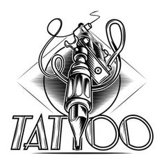

Sobre Nosotros
El artista del tatuaje utiliza una máquina manual que actúa muy parecido a una máquina de coser, con una o más agujas que perforan la piel repetidas veces.

El estudio de cada una de ellas debe ser por separado indicando forma, tamaño y localización.
Tatuajes
Son considerados como formas que representan a cada individuo, una manifestación cultural. Todos y cada uno de ellos significa un sentimiento propio o un pasaje inolvidable de la vida de quien lo porta. Además el
aspecto psicosocial que representan en la aceptación ante determinados grupos sociales.
Tatuajes de tipo religioso en los que se observa la imagen de la “santa muerte”. Otros que muestran una leyenda con una cruz pidiendo por los seres queridos. Es por ello, la manifestación tan importante en cada individuo que decide tatuarse.
En este tipo de manifestaciones podemos observar una gran diversidad de imágenes, como San Charbel o la
virgen de Guadalupe, de acuerdo a la creencia de cada individuo, buscando siempre el santo de su devoción.
Satisfacer las necesidades del cliente interno y externo: desarrollando, fabricando y comercializando productos y servicios de excelente calidad. Con un personal capacitado para dar soluciones integrales que generen bienestar, compromiso y trabajo en equipo.
Trabajamos unidos para ser la mejor empresa de Colombia en la industria de las perforación y tatuajes, con el fin de lograr en un plan quinquenal el más alto posicionamiento y rentabilidad en los mercados nacionales e internacionales con productos de inmejorable calidad y diseño, cumpliendo con los más altos estándares de servicio buscando la satisfacción total de nuestros clientes. Y dejando libre en su piel el arte que hay en su cabeza.

Compromiso con la calidad,Fiabilización en las relaciones Profesionalidad en el trato ,Experiencia ,Investigación